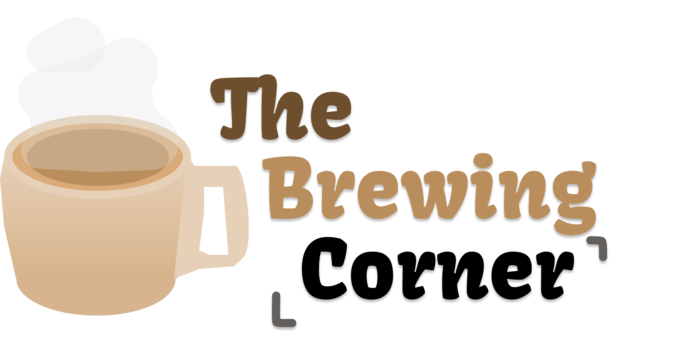

Acasă
Meniu
Despre noi
Aducem gustul cafelei perfecte... în liceu!
Vrei ca în liceu să poți savura o cafea cu prietenii?
Sau un smoothie răcoritor cu aromă de fructe?
Suntem aici ca să te ajutăm să te simți bine!
Produsele noastre pentru tine
Cafea
Biscuiți
Sandwich
Smoothie
Clătite proteice
Ingrediente naturale din surse sigure
Cafeaua noastră are gustul perfect nu doar pentru că știm cum să o preparăm, dar și pentru că alegem cu atenție tipul de cafea.
Utilizăm boabe de cafea robusta cu țara de origine Vietnam pentru cafea amăruie și boabe de cafea Arabica din Brazilia.
Biscuiții se potrivesc perfect cu o cafea în pauza de masă. Fie că sunt biscuiți simpli, fie cu fructe, au mereu un gust delicios.
Smoothiurile de fructe sunt grozave dacă îți dorești ceva răcoritor, bun și fără cofeină.
Programul cafenelei
Luni - vineri: 07:00 - 19:00
 Cafea
Cafea Biscuiți
Biscuiți Sandwich
Sandwich Smoothie
Smoothie Clătite proteiceCafeaBiscuițiSandwichSmoothieClătite proteice
Clătite proteiceCafeaBiscuițiSandwichSmoothieClătite proteice